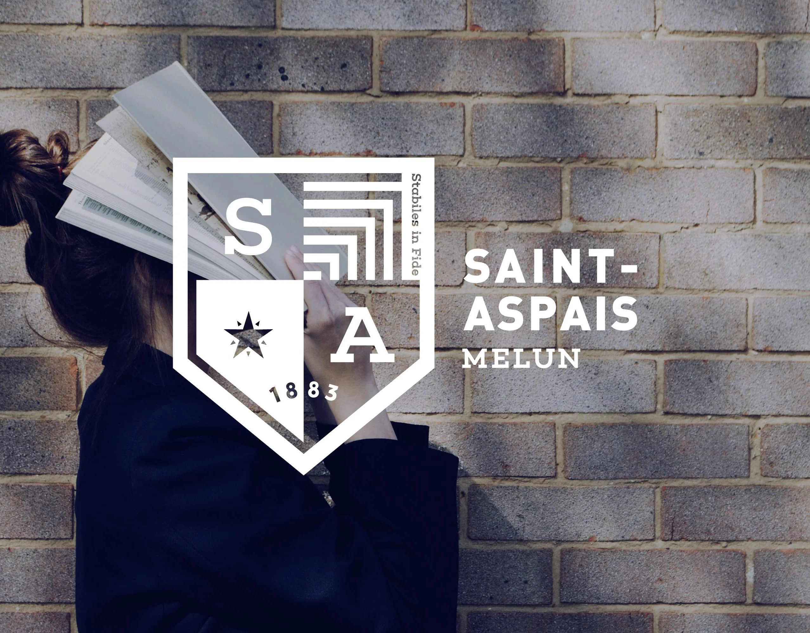
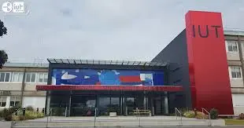

Je suis Grégoire Fichant--Bellini, j'ai 19 ans et je suis en première année de BUT informatique.
Je souhaite me tourner vers le développement logiciel car je veux devenir développeur d'applications. Je suis actuellement
à la recherche d'un stage dans ce domaine précis.
Sinon, je suis passionné de Basket-Ball et j'adore faire de la randonné.
A propos de moi
Diplômes
Après avoir passé mes trois années de lycée au lycée Saint Aspais, situé à Melun en Seine et Marne, j'ai obtenu en 2025 mon Bac Général avec la mention Très Bien. Mes spécialités étaient SVT et NSI (Numérique et Sciences de l'Informatique). En plus de cela, j'ai fait l'option Mathématiques Complémentaires en Terminale.

Actuellement je prépare mon BUT Informatique à l'IUT de Lannion, dans les Côtes d'Armor.
Au sein de l'IUT de Lannion, deux parcours sont proposés (vous pouvez cliquez sur les parcours pour avoir plus d'informations sur ces parcours) :
- Le parcours Réalisation d'applications : conception, développement, validation
- Le parcours Admistration, gestion et exploitation des données

Compétences
Le but premier de notre formation est l’acquisition de savoirs fondamentaux en développement informatique et web par l’apprentissage de langages de programmation, en administration des systèmes et réseaux, en bases de données et en conduite de projet.
Ainsi, la formation sera tourné au tour de 6 grandes compétences, qu'il faudra valider à la fin de la troisième année du BUT. Les voici :